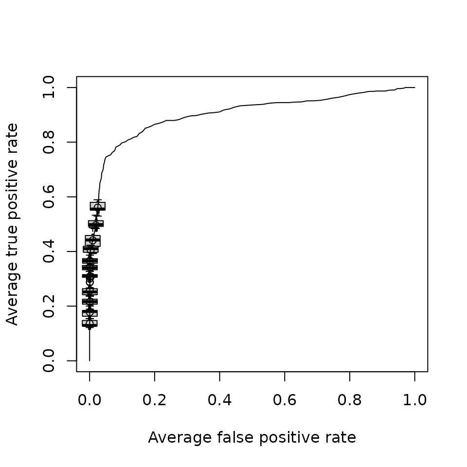
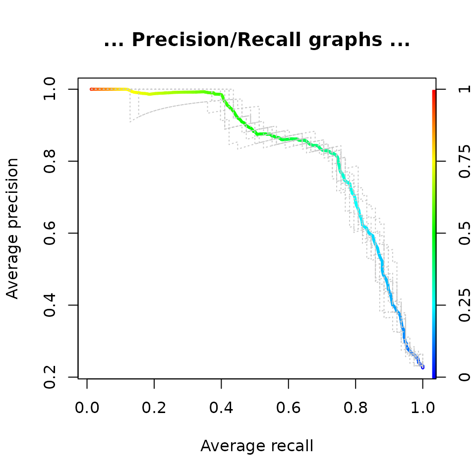
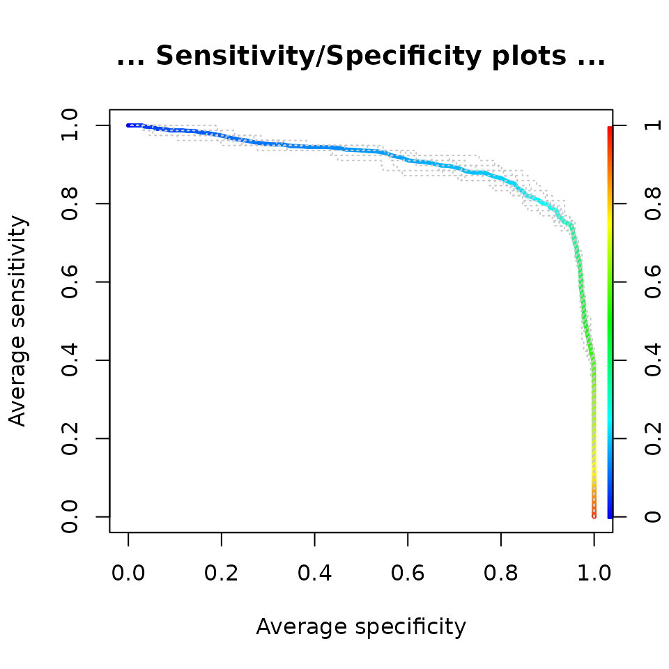
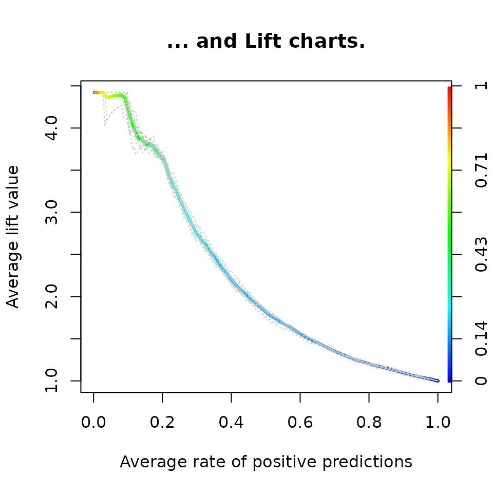
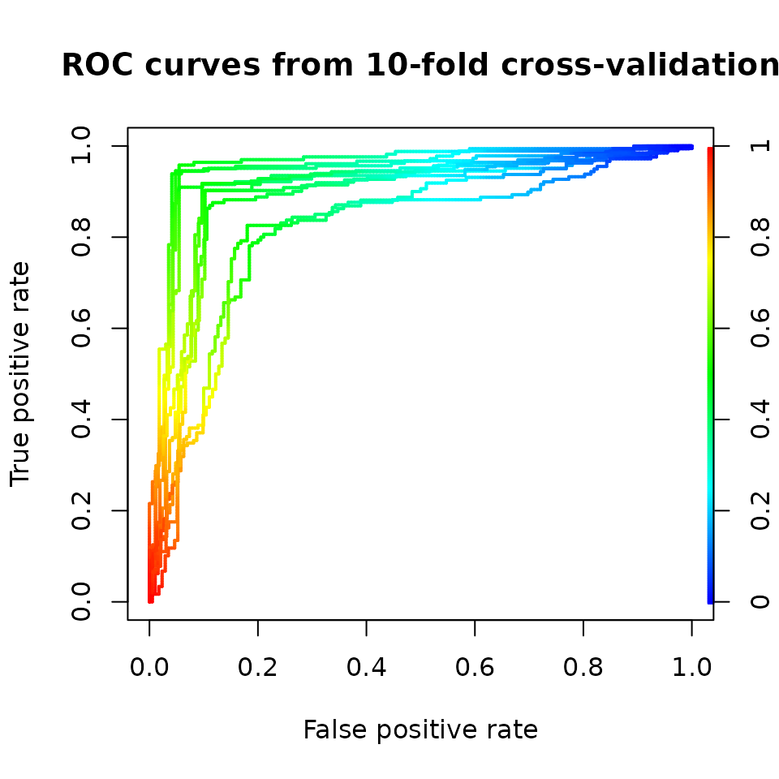
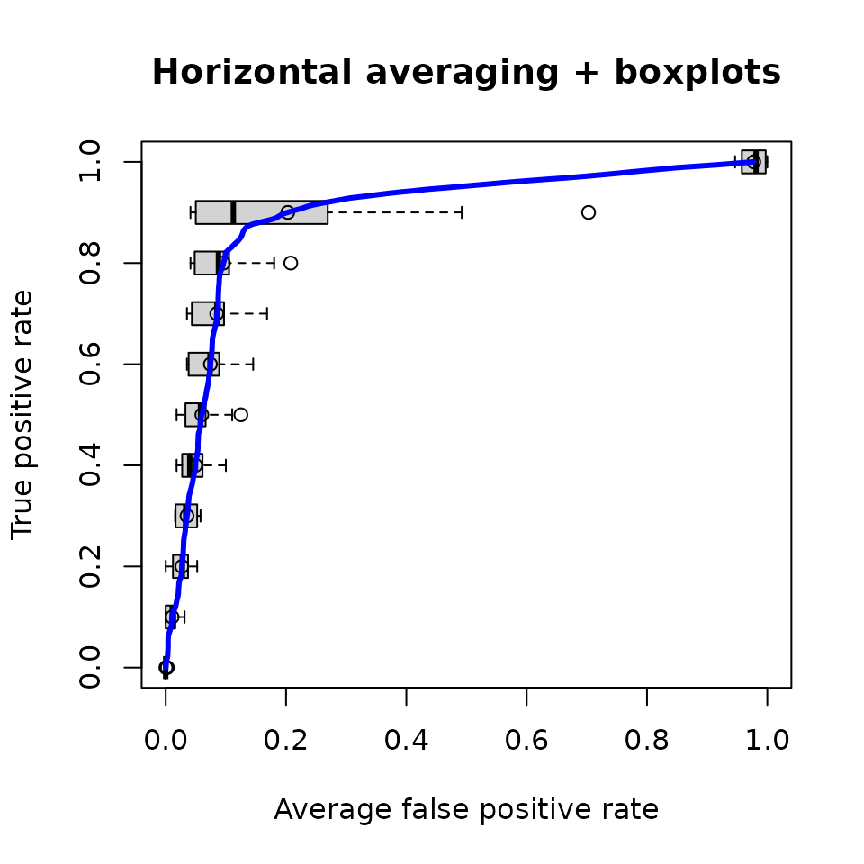
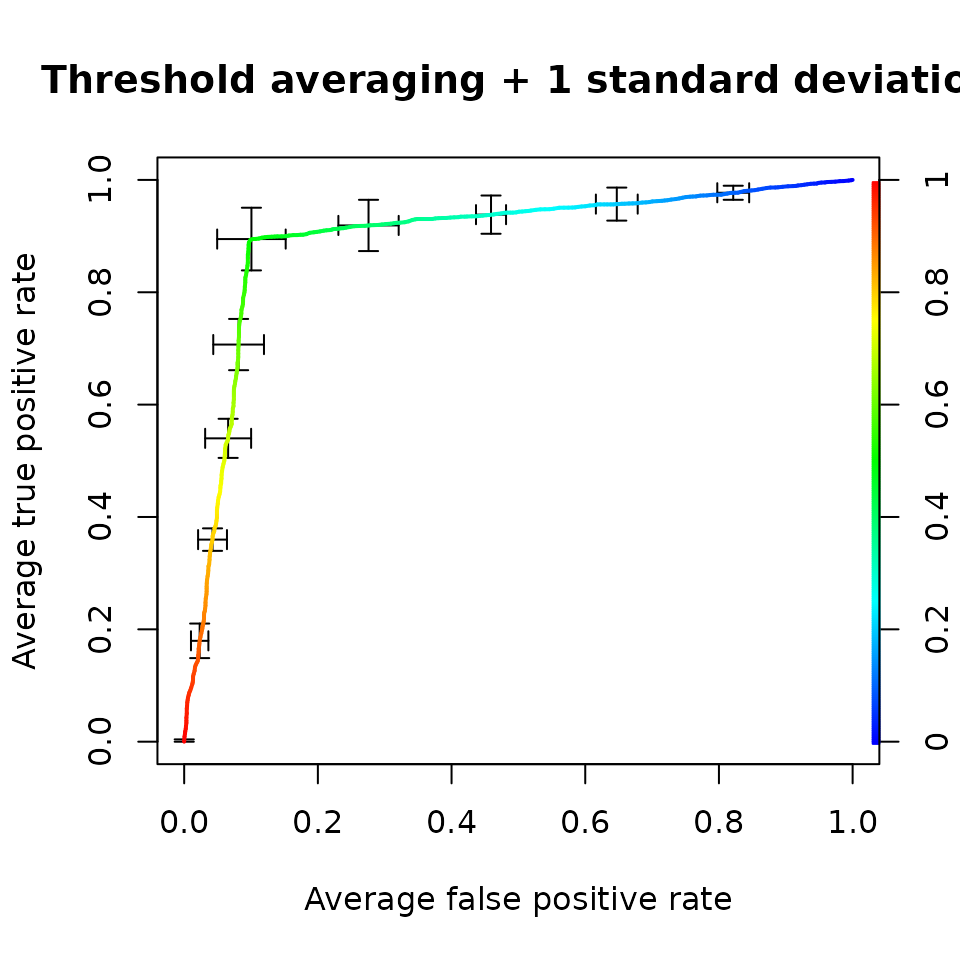

ROCR: visualizing classifier performance in R
Tobias Sing, Oliver Sander, Niko Beerenwinkel, Thomas Lengauer
Source:vignettes/ROCR.Rmd
ROCR.RmdAbstract
ROCR is a package for evaluating and visualizing the performance of scoring classifiers in the statistical language R. It features over 25 performance measures that can be freely combined to create two-dimensional performance curves. Standard methods for investigating trade-offs between specific performance measures are available within a uniform framework, including receiver operating characteristic (ROC) graphs, precision/recall plots, lift charts and cost curves. ROCR integrates tightly with R’s powerful graphics capabilities, thus allowing for highly adjustable plots. Being equipped with only three commands and reasonable default values for optional parameters, ROCR combines flexibility with ease of usage.Introduction
library(ROCR)
Pattern classification has become a central tool in bioinformatics, offering rapid insights into large data sets (Baldi and Brunak 2001). While one area of our work involves predicting phenotypic properties of HIV-1 from genotypic information (Beerenwinkel et al. 2002, 2003; Sing, Beerenwinkel, and Lengauer 2004), scoring or ranking predictors are also vital in a wide range of other biological problems. Examples include microarray analysis (e.g. prediction of tissue condition based on gene expression), protein structural and functional characterization (remote homology detection, prediction of post-translational modifications and molecular function annotation based on sequence or structural motifs), genome annotation (gene finding and splice site identification), protein–ligand interactions (virtual screening and molecular docking) and structure–activity relationships (predicting bioavailability or toxicity of drug compounds). In many of these cases, considerable class skew, class-specific misclassification costs, and extensive noise due to variability in experimental assays complicate predictive modelling. Thus, careful predictor validation is compulsory.
| Contingency ratios | error rate, accuracy, sensitivity, specificity, true/false positive rate, fallout, miss, precision, recall, negative predictive value, prediction-conditioned fallout/miss. |
| Discrete covariation measures | Phi/Matthews correlation coefficient, mutual information, Chi-squared test statistic, odds ratio |
| Information retrieval measures | F-measure, lift, precision-recall break-even point |
| Performance in ROC space | ROC convex hull, area under the ROC curve |
| Absolute scoring performance | calibration error, mean cross-entropy, root mean-squared error |
| Cost measures | expected cost, explicit cost |
The real-valued output of scoring classifiers is turned into a binary class decision by choosing a cutoff. As no cutoff is optimal according to all possible performance criteria, cutoff choice involves a trade-off among different measures. Typically, a trade-off between a pair of criteria (e.g. sensitivity versus specificity) is visualized as a cutoff-parametrized curve in the plane spanned by the two measures. Popular examples of such trade-off visualizations include receiver operating characteristic (ROC) graphs, sensitivity/specificity curves, lift charts and precision/recall plots. (Fawcett 2004)(#References) provides a general introduction into evaluating scoring classifiers with a focus on ROC graphs.
Although functions for drawing ROC graphs are provided by the Bioconductor project (http://www.bioconductor.org) or by the machine learning package Weka (http://www.cs.waikato.ac.nz/ml), for example, no comprehensive evaluation suite is available to date. ROCR is a flexible evaluation package for R (http://www.r-project.org), a statistical language that is widely used in biomedical data analysis. Our tool allows for creating cutoff-parametrized performance curves by freely combining two out of more than 25 performance measures (Table 1). Curves from different cross-validation or bootstrapping runs can be averaged by various methods. Standard deviations, standard errors and box plots are available to summarize the variability across the runs. The parametrization can be visualized by printing cutoff values at the corresponding curve positions, or by coloring the curve according to the cutoff. All components of a performance plot are adjustable using a flexible mechanism for dispatching optional arguments. Despite this flexibility, ROCR is easy to use, with only three commands and reasonable default values for all optional parameters.
In the example below, we will briefly introduce ROCR’s three commands—prediction, performance and plot—applied to a 10-fold cross-validation set of predictions and corresponding class labels from a study on predicting HIV coreceptor usage from the sequence of the viral envelope protein. After loading the dataset, a prediction object is created from the raw predictions and class labels.
data(ROCR.hiv) predictions <- ROCR.hiv$hiv.svm$predictions labels <- ROCR.hiv$hiv.svm$labels pred <- prediction(predictions, labels) pred #> A prediction instance #> with 10 cross validation runs (equal lengths)
Performance measures or combinations thereof are computed by invoking the performance method on this prediction object. The resulting performance object can be visualized using the method plot. For example, an ROC curve that trades off the rate of true positives against the rate of false positives is obtained as follows:
perf <- performance(pred, "tpr", "fpr") perf #> A performance instance #> 'False positive rate' vs. 'True positive rate' (alpha: 'Cutoff') #> for 10 cross validation runs plot(perf, avg="threshold", spread.estimate="boxplot")

The optional parameter avg selects a particular form of performance curve averaging across the validation runs; the visualization of curve variability is determined with the parameter spread.estimate.
![***Fig 1:** Visualizations of classifier performance (HIV coreceptor usage data): (a) receiver operating characteristic (ROC) curve; (b) peak accuracy across a range of cutoffs; (c) absolute difference between empirical and predicted rate of positives for windowed cutoff ranges, in order to evaluate how well the scores are calibrated as probability estimates. Owing to the probabilistic interpretation, cutoffs need to be in the interval [0,1], in contrast to other performance plots. (d) Score density estimates for the negative (solid) and positive (dotted) class.*](ROCR_files/figure-html/unnamed-chunk-5-1.png)
Fig 1: Visualizations of classifier performance (HIV coreceptor usage data): (a) receiver operating characteristic (ROC) curve; (b) peak accuracy across a range of cutoffs; (c) absolute difference between empirical and predicted rate of positives for windowed cutoff ranges, in order to evaluate how well the scores are calibrated as probability estimates. Owing to the probabilistic interpretation, cutoffs need to be in the interval [0,1], in contrast to other performance plots. (d) Score density estimates for the negative (solid) and positive (dotted) class.
Issuing demo(ROCR) starts a demonstration of further graphical capabilities of ROCR. The command help(package=ROCR) points to the available help pages. In particular, a complete list of available performance measures can be obtained via help(performance). A reference manual can be downloaded from the ROCR website.
In conclusion, ROCR is a comprehensive tool for evaluating scoring classifiers and producing publication-quality figures. It allows for studying the intricacies inherent to many biological datasets and their implications on classifier performance.
Additional examples
Below you can find many additional examples of ROCR’s features of performance measurement and the possibilites in plotting. However, this only a first taste. For more examples, please run demo(ROCR) and make sure the plotting deminsions are big enough.
ROC curves, Precision/Recall graphs and more …
perf <- performance(pred, "tpr", "fpr") plot(perf, avg= "threshold", colorize=TRUE, lwd= 3, main= "With ROCR you can produce standard plots\nlike ROC curves ...") plot(perf, lty=3, col="grey78", add=TRUE)
perf <- performance(pred, "prec", "rec") plot(perf, avg= "threshold", colorize=TRUE, lwd= 3, main= "... Precision/Recall graphs ...") plot(perf, lty=3, col="grey78", add=TRUE)

perf <- performance(pred, "sens", "spec") plot(perf, avg= "threshold", colorize=TRUE, lwd= 3, main="... Sensitivity/Specificity plots ...") plot(perf, lty=3, col="grey78", add=TRUE)

perf <- performance(pred, "lift", "rpp") plot(perf, avg= "threshold", colorize=TRUE, lwd= 3, main= "... and Lift charts.") plot(perf, lty=3, col="grey78", add=TRUE)

Averaging over multiple predictions
Multiple batches of predictions can be analyzed at the same time.
data(ROCR.xval) predictions <- ROCR.xval$predictions labels <- ROCR.xval$labels length(predictions) #> [1] 10
pred <- prediction(predictions, labels) perf <- performance(pred,'tpr','fpr')
This can be used for plotting averages using the avg argument.
plot(perf, colorize=TRUE, lwd=2, main='ROC curves from 10-fold cross-validation')

plot(perf, avg='vertical', spread.estimate='stderror', lwd=3,main='Vertical averaging + 1 standard error', col='blue')
plot(perf, avg='horizontal', spread.estimate='boxplot', lwd=3, main='Horizontal averaging + boxplots', col='blue')

plot(perf, avg='threshold', spread.estimate='stddev', lwd=2, main='Threshold averaging + 1 standard deviation', colorize=TRUE)

Cutoff stacking
plot(perf, print.cutoffs.at=seq(0,1,by=0.2), text.cex=0.8, text.y=lapply(as.list(seq(0,0.5,by=0.05)), function(x) { rep(x,length(perf@x.values[[1]])) } ), col= as.list(terrain.colors(10)), text.col= as.list(terrain.colors(10)), points.col= as.list(terrain.colors(10)), main= "Cutoff stability")
Combination of performance measures
Performance measures can be combined freely.
perf <- performance(pred,"pcmiss","lift")
References
Baldi, Pierre, and Søren Brunak. 2001. Bioinformatics: The Machine Learning Approach. MIT Press, Cambridge, MA.
Beerenwinkel, Niko, Martin Däumer, Mark Oette, Klaus Korn, Daniel Hoffmann, Rolf Kaiser, Thomas Lengauer, Joachim Selbig, and Hauke Walter. 2003. “Geno2pheno: estimating phenotypic drug resistance from HIV-1 genotypes.” Nucleic Acids Research 31 (13): 3850–5. https://doi.org/10.1093/nar/gkg575.
Beerenwinkel, Niko, Barbara Schmidt, Hauke Walter, Rolf Kaiser, Thomas Lengauer, Daniel Hoffmann, Klaus Korn, and Joachim Selbig. 2002. “Diversity and Complexity of Hiv-1 Drug Resistance: A Bioinformatics Approach to Predicting Phenotype from Genotype.” Proceedings of the National Academy of Sciences 99 (12): 8271–6. https://doi.org/10.1073/pnas.112177799.
Fawcett, T. 2004. “ROC Graphs: Notes and Practical Considerations for Researchers.” In HPL-2003-4., 89–96. HP Labs, Palo Alto, CA.
Sing, Tobias, Niko Beerenwinkel, and Thomas Lengauer. 2004. “Learning Mixtures of Localized Rules by Maximizing the Area Under the Roc Curve.” In In et Al José Hernández-Orallo, Editor, 1st International Workshop on Roc Analysis in Artificial Intelligence, 89–96.